Pati, 25 Juni 2022
Hal : lamaran pekerjaan
Kepada Bapak/Ibu Pimpinan Perusahaan
Di tempat
Dengan hormat,
Sesuai dengan informasi adanya lowongan pekerjaan di Perusahaan Senggol Bacok yang saya dapatkan dari surat kabar SuaraHati.com pada tanggal 24 Juni 2022. Saya bermaksud untuk melamar pekerjaan dan bergabung ke dalam perusahaan yang Bapak / Ibu pimpin. Adapun bagian pekerjaan yang saya maksudkan adalah bagian App Developer/IT Support di perusahaan PT Senggol Bacok. Berikut ini adalah data singkat saya :
Nama : Ahmad Silmi Rosyadi
TTL : Pati, 24 Desember 2022
Pendidikan Terakhir : S1 Teknik Informatika
Alamat : Dk. Rames, Ds. Sukoharjo, Kec. Wedarijaksa, Kab. Pati
Telp : 0812-3308-8136
Saat ini, saya dalam kondisi sehat jasmani dan rohani. Saya juga aktif berorganisasi dan memiliki kemampuan bahasa Inggris dengan fasih. Kejujuran selalu saya utamakan dan latar belakang pendidikan saya sangat memuaskan. Saya juga menguasai beberapa bahasa pemrograman seperti javascript, css, python, php, kotlin, dan juga bisa editing foto dan video
Bersama surat ini saya sertakan kelengkapan berkas di web ini sebagai berikut:
1. Profil
2. CV
3. Portofolio
4. Skills
Demikian permohonan ini saya buat. Adapun seluruh data dan dokumen yang saya berikan adalah benar. Apabila di kemudian hari ditemukan data yang tidak benar, maka saya menerima keputusan panitia membatalkan keikutsertaan/kelulusan saya pada seleksi ini. Atas perhatian dan kerja samanya saya ucapkan terima kasih.
Hormat saya,
Ahmad Silmi Rosyadi

 
